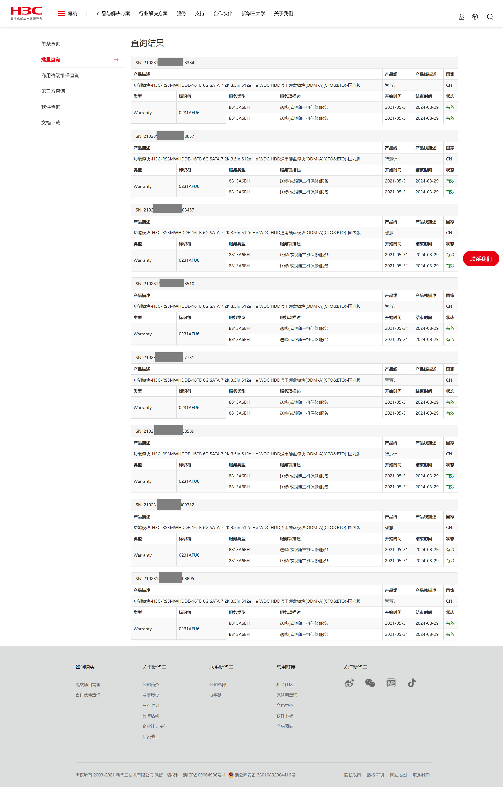
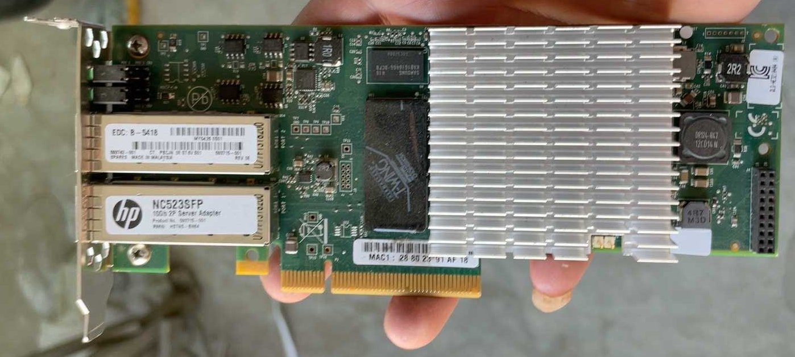
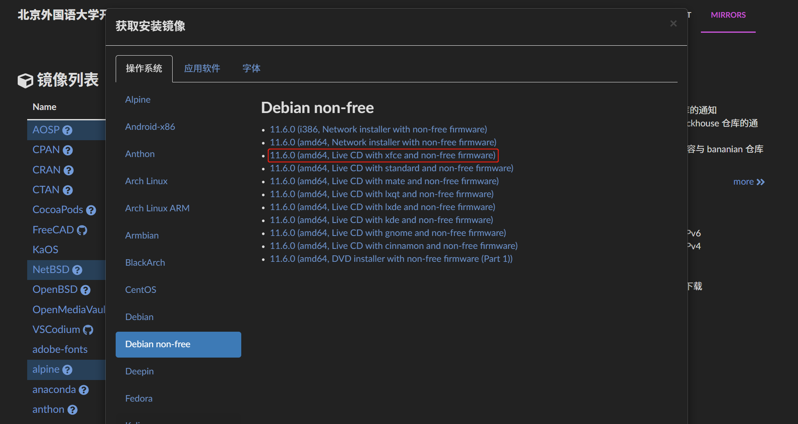
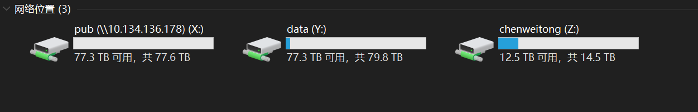

记一次存储服务器的搭建
去年由于科研的需要，有大量的数据存储需求。再加之对百度网盘存储不放心，准备自建存储服务器，这样可以摆脱所有云存储的需求，将数据牢牢掌握在自己手中。我准备配一台存储服务器，这种设备叫做NAS (Net Attached Storage)，即网络附加存储。可以通过NFS，SMB/CIFS，FTP，iSCSI等协议访问服务器内的文件。
准备硬件
硬盘
2021年 Chia 狂潮已过，二手硬盘的价格降到了史低。在咸鱼上与奸商斗智斗勇，以920元/片的价格购得8片西部数据 WDC HC550 16T 硬盘。
看盘片的信息，这批硬盘应该是华三的服务器下架硬盘。根据硬盘上的SN码（小标签），在华三官网上查询，居然都还在保，到2024年，算是捡了个漏。

服务器
又在淘宝上购买了一台存储服务器，型号为华为RH2288V2。这台服务器具有12盘位，支持双路至强E5V2处理器，DDR3 REG ECC内存，LSI2308直通卡，具有很高的性价比。正好手头有很多DDR3 REG ECC的服务器内存，正好利用起来。服务器到手后内部很干净。

网卡
万兆网卡自然也是不可或缺的，正好在咸鱼上看到一块不错的惠普万兆光口网卡价格不错，型号为 NC523SFP 是 Qlogic 的 OEM 产品。

固态硬盘
此外，还要准备一块系统盘，我购买了一块 NVMe 的固态盘，三星 PM981A 。此盘为三星970 Pro的 OEM 版本，性能尚可。再加上一块PCIe转NVMe的转接板，就可以使用了。
由于x79的BIOS无法识别NVMe的硬盘，所以虽然系统里能看到，但是却是无法从这块硬盘启动的。对于这种情况，一般有两种解决思路：
-
从源头解决问题。在BIOS中添加NVMe的驱动
NVMeExpressDxE.ffs。使用这种方法可以参考这篇文章：https://zhuanlan.zhihu.com/p/57240058
-
曲线救国。在一个U盘中写入Clover，用Clover链式引导NVMe中的操作系统。
使用这种方法可以参考这篇文章：https://zhuanlan.zhihu.com/p/508424810
安装操作系统
其实NAS系统有很多选择，比如群晖DSM，UNRAID，TrueNAS Core/Scale等等。但是我不喜欢这类成品NAS系统。我这次选择安装Debian 11，从头开始配置。这样我就能掌控系统的所有细节，也能在踩各种坑的过程中学习到一些东西。
-
从 BFSU
广搜大学(bushi 开源软件镜像站下载 Debian non-free 的 Live CD。选择non-free的原因是这种镜像中含有非自由固件，服务器上一些稀奇古怪的硬件可能并不提供开源自由的驱动，并没有被整合入Debian CD中。选择Live CD的原因在于可以在安装时临时进入系统环境，再次确保没有兼容性问题。
-
使用Rufus或者其他镜像工具将下载的
iso镜像写入U盘，或者直接使用Ventory。我更推荐后者。 -
从U盘启动，在启动界面选择
Graphic install，按照安装程序的指引安装系统。Tips: 不知道是不是 Debian 安装程序的 bug ，在开始最好不要连接互联网。因为一旦连接了互联网，无论后面的步骤选择什么镜像源，哪怕是国内的镜像源，实际上都会连接到
ftp.debian.org这个境外的官方源，速度极慢，即使你选择了不使用网络镜像。如果不联网，只会使用iso内部的源，安装很快就能完成。
基础工作
以下的工作默认为root用户环境下进行。务必谨慎操作，除非你知道你在做什么。
-
换源
执行以下指令：
1
2
3
4
5
6
7
8
9
10
11
12
13
14
15
16
17cat << 'EOF' > /etc/apt/sources.list
# 默认注释了源码镜像以提高 apt update 速度，如有需要可自行取消注释
deb https://mirrors.bfsu.edu.cn/debian/ bullseye main contrib non-free
# deb-src https://mirrors.bfsu.edu.cn/debian/ bullseye main contrib non-free
deb https://mirrors.bfsu.edu.cn/debian/ bullseye-updates main contrib non-free
# deb-src https://mirrors.bfsu.edu.cn/debian/ bullseye-updates main contrib non-free
deb https://mirrors.bfsu.edu.cn/debian/ bullseye-backports main contrib non-free
# deb-src https://mirrors.bfsu.edu.cn/debian/ bullseye-backports main contrib non-free
deb https://mirrors.bfsu.edu.cn/debian-security bullseye-security main contrib non-free
# deb-src https://mirrors.bfsu.edu.cn/debian-security bullseye-security main contrib non-free
# deb https://security.debian.org/debian-security bullseye-security main contrib non-free
# # deb-src https://security.debian.org/debian-security bullseye-security main contrib non-free
EOF这将把中间的内容写入
/etc/apt/sources.list文件中，直到终端读取到EOF字符串。再运行
apt update来将软件源写入缓存。 -
安装常用工具
1
apt-get install -y -f openssh-server vim git zsh wget curl build-essential neofetch tmux htop apt-transport-https ca-certificates
-
一些配置
-
ssh允许root用户登录1
echo "PermitRootLogin yes" >> /etc/ssh/sshd_config
-
配置
oh-my-zsh与powerline-10kTips:
zsh配合oh-my-zsh与powerline-10k可以大大提高终端工作的效率。优秀的终端补全功能会让你用一次就离不开它。当然选择开箱即用的fish也未尝不可，只需apt-get install -y fish并且chsh -s /usr/bin/fish。在任意 shell 下执行：
1
2
3git clone https://gitee.com/mirrors/oh-my-zsh.git
cd oh-my-zsh/tools
REMOTE=https://gitee.com/mirrors/oh-my-zsh.git sh install.sh #To change remote进入
zsh环境后，再执行：1
2
3
4
5rm -rf oh-my-zsh
git -C $ZSH remote set-url origin https://gitee.com/mirrors/oh-my-zsh.git
git -C $ZSH pull
git clone --depth=1 https://gitee.com/romkatv/powerlevel10k.git ${ZSH_CUSTOM:-$HOME/.oh-my-zsh/custom}/themes/powerlevel10k
omz theme set powerlevel10k/powerlevel10k然后
p10k会自动进入主题的配置，选择你喜欢的终端主题吧！ -
安装
condaTips: 对于任意
Linux发行版，我都不推荐直接使用系统的Python。因为有很多软件包依赖于系统提供的Python，而Python有一套自己的包管理体系pip，很容易一不小心把系统搞炸。因此我选择使用另外一套Python环境，依据你的喜好可以选择Anaconda，Miniconda或者conda-forge均可。此处以Anaconda为例。执行以下命令安装
Anaconda3：1
2
3
4
5curl -O https://mirrors.nju.edu.cn/anaconda/archive/Anaconda3-2022.10-Linux-x86_64.sh
chmod +x ./Anaconda3-2022.10-Linux-x86_64.sh
.Anaconda3-2022.10-Linux-x86_64.sh
conda init zsh
source .zshrc
-
文件系统的选择
对于安装NAS而言，最重要的莫过于选择文件系统了。由于系统基于Linux，还是有不少文件系统可以选择的。
EXT4
EXT4全称为Fourth extended filesystem，第四代可扩展文件系统，可以说是Linux上最流行的文件系统了。但是这个系统用作存储数据，还是有些简陋，缺乏可靠性。在此不过多介绍。详细的资料可参考：
Btrfs
Btrfs即B-Tree Filesystem，是一种支持CoW（写时拷贝）的文件系统。Btrfs也宣称专注在“容错、修复及易于管理”。这种文件系统在Arch Linux上较为流行。详细的资料可参考：
ZFS
下面我将着重介绍ZFS。一方面原因，ZFS是我认为最好的文件系统。另外一方面，ZFS有关的资料在国内十分稀少。

ZFS的全称为Zettabyte Filesystem，最早是 Sun 开发应用于 Solaris 的操作系统，ZFS随着OpenSolaris一起开源了。在2010年，Sun被Oracle收购，ZFS成为Oracle的注册商标。Oracle停止为 OpenSolaris 和 ZFS 项目提供更新的源代码，使得 Oracle 的 ZFS 转为闭源。因此，有人成立了illumos项目，去维护已经存在的开源的Solaris代码，并且在2013年成立OpenZFS以配合ZFS的开源发展。OpenZFS维护管理核心ZFS代码。但是ZFS的代码采用CDDL （通用开发与散布许可证），与Linux内核的GPL-v2许可证相冲突，无法与Linux同时分发。但是藉由DKMS （动态内核模块支持）,我们可以添加内核模块，使内核支持ZFS的读写。
安装
执行以下命令以安装ZFS：
1 | apt-get install -y zfsutils-linux |
使用
创建存储池
Tips: 这里我使用raidz2，这是一种“软raid”。类似于RAID6，raidz2最多允许两块物理磁盘同时损坏而不会丢失数据。请不要心疼存储空间，因为你的数据的价值可能数倍于存储介质。
1 | zpool create mainPool raidz2 sda sdb sdc sdd sde sdf sdg sdh -f |
创建的存储池将默认挂载于/mainPool。此时已经可以向其中写入文件，但是不建议这样做。
创建文件系统
1 | zfs create mainPool/data |
验证
运行df -h可以看出文件系统已经被挂载：
1 | 文件系统 容量 已用 可用 已用% 挂载点 |
Tips: 具体的使用方法可参考Oracle的官方文档，里面写的十分详细。有便于携带的PDF版本：https://docs.oracle.com/cd/E38902_01/pdf/E38893.pdf。
共享配置
NFS
nfs是Linux/UNIX之间共享文件的常用方式。
安装
1 | apt-get install nfs-kernel-server |
配置
编辑/etc/exports并加入以下行：
1 | /mainPool/pub 10.10.2.0/24(rw,all_squash,sync) |
详细配置参数可以参考鸟哥的文章：http://cn.linux.vbird.org/linux_server/0330nfs.php
每次更改配置后，都需要重载配置：systemctl reload nfs-server.service。
挂载
在另外一台机器上执行：
1 | mount 10.10.2.10:/mainPool/pub /mnt/pub |
再运行df -h就可以看到共享了：
1 | 文件系统 容量 已用 可用 已用% 挂载点 |
SMB/CIFS
如果想要让Windows也连接共享，smb无疑是最简便的方式。Linux上smb服务器的实现是samba。
安装
1 | apt-get install samba |
配置
samba的用户认证依赖于UNIX用户，所以首先要向系统添加用户：
1 | useradd smbuser |
然后设置SMB的密码：
Tips: 首次添加新用户要加上
-a参数。
smbpasswd smbuser -a
输入两次你想设置的密码就好了。
下一步，更改samba的配置文件，路径在/etc/samba/smb.conf:
1 | [global] |
Tips: 其中
aio read size = 0与aio write size = 0十分重要，用于关闭文件异步读写，这样可以大幅提升Windows读写共享文件夹的速度。
这就是Windows下挂载共享的效果啦：

FTP
另一种跨平台的文件共享方式就是ftp了。Linux上一个比较流行的ftp服务器实现为vsftpd。网上的教程很多，在这里就不赘述啦。可以参考：vsftpd - Community Help Wiki - Ubuntu Documentation。
总结
上面的文章，介绍了我从购买硬件到配置共享的全过程，希望能对你有所帮助。其中内容难以面面俱到，可能也有所阙漏，希望各位读者发现后予以斧正。